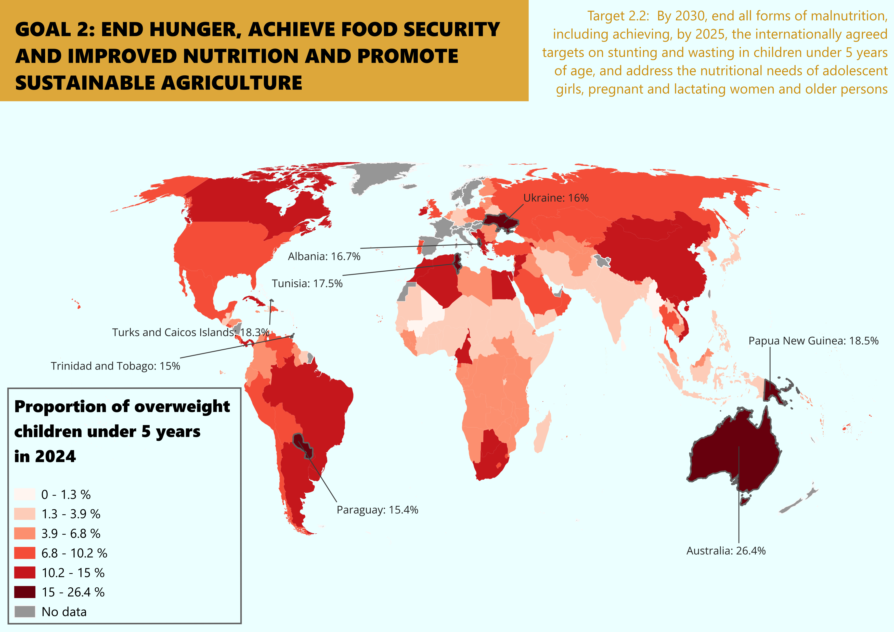
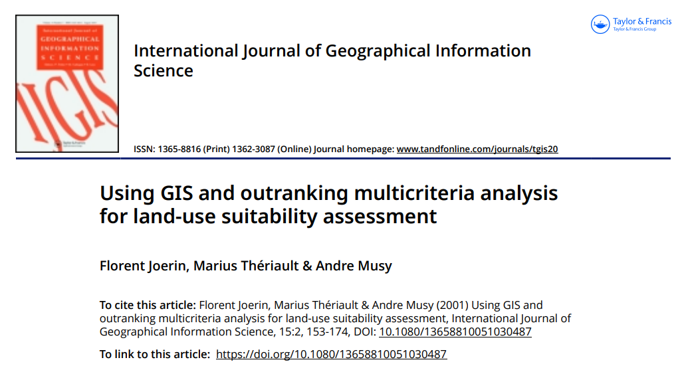

Map Portfolio

Chloropleth map
Chloropleth map of proportion of overweight children across the world

Vector analysis
Visualization of driving distance to nearest hospital in Bratislava

Urban flood model
Model of flood in the central Utrecht after 1 m sea level rise

Vegetation indices
Map of change of vegetation coverage and health using multispecrtal satellite imagery

Land use classification
Comparison of different methods of automated land use classification

Multicriteria analysis
Intorduction to multicriteria analysis with an example study